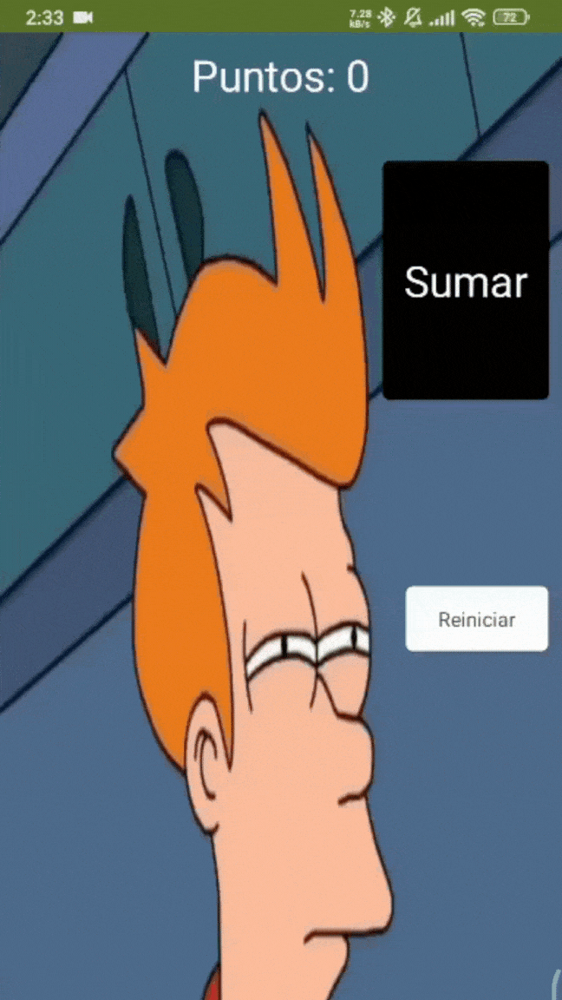
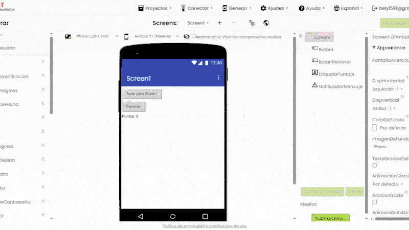
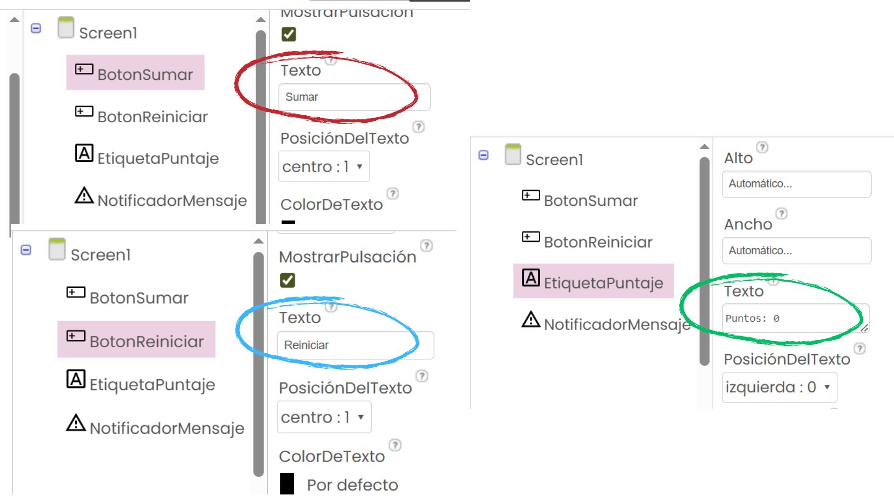

En esta segunda clase, vamos a crear una aplicación sencilla llamada Contador de Puntos. Esta app tendrá un botón para sumar puntos, otro para reiniciar el contador y mostrará el puntaje en pantalla. También aprenderemos a mostrar un mensaje especial cuando lleguemos a 10 puntos. ¡Prepárate para explorar eventos, variables y más!
Actividad práctica
¡Ahora sí, vamos a construir la app Contador de Puntos! Sigue estos pasos para crear la interfaz y programar la lógica. Asegúrate de tener App Inventor abierto en ai2.appinventor.mit.edu.
2. Diseña la interfaz
En el Diseñador, agrega estos componentes:
- Etiqueta (Label): Cámbiale el nombre a Etiqueta盘Puntaje y ponle el texto inicial "Puntos: 0".
- Botón (Button): Cámbiale el nombre a BotonSumar y ponle el texto "Sumar Punto".
- Botón (Button): Cámbiale el nombre a BotonReiniciar y ponle el texto "Reiniciar".
- Notificador (Notifier): Cámbiale el nombre a NotificadorMensaje.
En el siguiente GIF se muestra cómo cambiar el nombre:
En la siguiente imagen verás cómo debe quedar:
3. Programa la lógica
Ve a la pestaña Bloques y sigue estos pasos:
3.1 Inicializa la variable
- En el panel izquierdo, selecciona la categoría Variables.
- Arrastra el bloque "inicializar variable global" a la pantalla de trabajo.
- Haz clic en el texto "nombre" del bloque y escribe
puntaje. - En el slot del bloque, arrastra un bloque número desde la categoría Matemáticas y escribe
0. - El bloque final debe verse como: "inicializar variable global puntaje como 0".
3.2 Botón Sumar
- En el panel izquierdo, selecciona BotonSumar (bajo la categoría de componentes).
- Arrastra el bloque "cuando BotonSumar.Clic" a la pantalla de trabajo.
- Dentro de este bloque:
- Incrementar puntaje: Desde la categoría Variables, arrastra el bloque "poner global puntaje a". En el slot, arrastra un bloque suma (de Matemáticas), coloca el bloque "tomar global puntaje" (de Variables) en el primer slot y un bloque número 1 (de Matemáticas) en el segundo slot.
- Actualizar etiqueta: Desde la categoría EtiquetaPuntaje, arrastra el bloque "poner EtiquetaPuntaje.Texto como". En el slot, arrastra un bloque unir (de Texto), coloca el texto
"Puntos: "en el primer slot y el bloque "tomar global puntaje" en el segundo slot. - Mostrar mensaje si puntaje es 10: Desde la categoría Control, arrastra un bloque "si entonces". En la condición, usa un bloque "igual" (de Matemáticas), colocando "tomar global puntaje" y un bloque número 10. En el bloque "entonces", arrastra un bloque "llamar NotificadorMensaje.MostrarAlertaaviso" (de NotificadorMensaje) y escribe
"¡Llegaste a 10 puntos!"en el slot.
3.3 Botón Reiniciar
- En el panel izquierdo, selecciona BotonReiniciar.
- Arrastra el bloque "cuando BotonReiniciar.Clic" a la pantalla de trabajo.
- Dentro de este bloque:
- Restablecer puntaje: Arrastra el bloque "poner global puntaje a" (de Variables) y coloca un bloque número 0 (de Matemáticas) en el slot.
- Actualizar etiqueta: Arrastra el bloque "poner EtiquetaPuntaje.Texto como" (de EtiquetaPuntaje) y coloca el texto
"Puntos: 0".
4. Prueba tu app
Conecta el emulador o tu celular usando el Companion. Haz clic en "Sumar Punto" varias veces y verifica que el puntaje aumenta. Cuando llegues a 10, debería aparecer un mensaje. Usa "Reiniciar" para volver a 0.

5. Desafío (opcional)
Si terminaste rápido, prueba estas mejoras:
- Personaliza el diseño de los botones (cambia el color, tamaño o fuente).
- Cambia la disposición de los botones (por ejemplo, alinea los botones en horizontal o vertical).
- Modifica el color de fondo de la pantalla para que sea más atractivo.